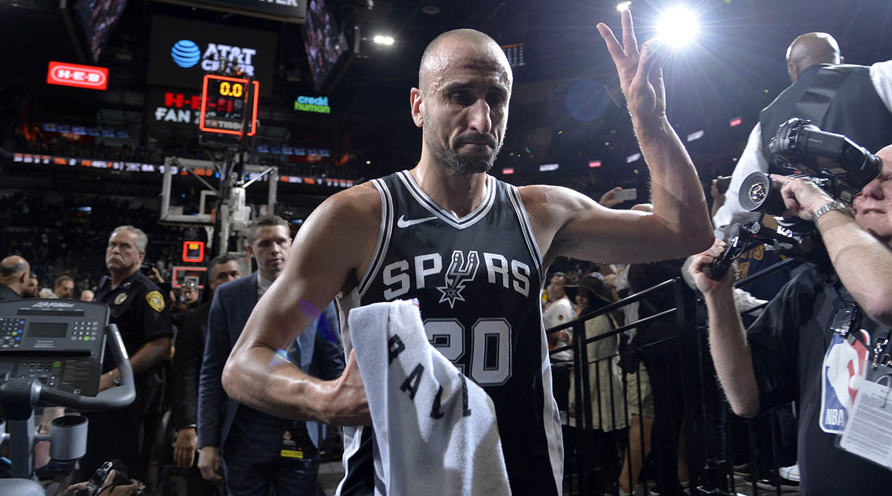

1.早在1999年，聖安東尼奧馬刺隊就在第二輪第57順位（當年的最後一個選秀順位）選中了吉諾比利。
2002年，吉諾比利參加了世界籃球錦標賽，在與姚明、德克·諾維斯基、佩賈·斯托亞科維奇等人一同進入最佳陣容後，
他終於答應了馬刺隊的邀請，正式涉足NBA。
2.在新秀賽季中，吉諾比利一開始由於受到傷病困擾，表現平平，淪為史蒂夫·史密斯的替補。
但在賽季末期，他逐漸適應了NBA的打法，成為格雷格·波波維奇手中的重要棋子，為馬刺最終奪取2003年NBA總冠軍做出了貢獻。
吉諾比利也隨之在阿根廷這個足球國度成名，受到了阿根廷總統內斯托·基什內爾的接見，
2005年被選入NBA全明星賽，並再次隨隊奪得NBA總冠軍。
於2003、2005、2007、2014年間助馬刺隊獲得四次NBA總冠軍。
3.2006-07賽季中期有種言論就是吉諾比利打替補的話，馬刺會更好，波波維奇也在2007年1月問了吉諾比利關於此事的看法。
而吉諾比利也同意此事，吉諾比利的犧牲讓馬刺的輪換陣容更加平衡。

4.2017年11月4日，馬刺迎戰前來踢館的黃蜂，馬刺以108比101險勝黃蜂；
吉諾比利取得10分、4籃板、5助攻、2抄截的成績，也是吉諾比利為馬刺效力第1000場例行賽。
5.2018年1年6日，馬刺主場迎戰太陽，馬刺以103比89擊敗太陽；
吉諾比利取得21分、1籃板、3助攻、2抄截、1阻攻的成績，也是NBA2017-18賽季，
第二位在40歲得分超過二十分的球員，前一位文斯·卡特。
6.2018年1月8日，馬刺客場三連戰，首戰波特蘭，馬刺以1分之差，戰敗波特蘭；
吉諾比利繳出26分、4籃板、2助攻，上一次在40歲的年紀，連續兩場得分超過20分的球員是麥可·喬丹；
吉諾比利是NBA首位以替補身分在40歲連續兩場取得20分貢獻的球員。
2018年明星賽投票 , 球迷結果雖然高達180多萬票，不過扔遺憾未進明星賽。吉諾比利本人也表示謝謝球迷的意氣相挺。
7.2018年8月28日，吉諾比利正式宣布退休，結束16年於馬刺隊的NBA生涯。
其在馬刺隊的20號球衣也於2019年3月28日，馬刺主場對騎士的比賽中高掛。